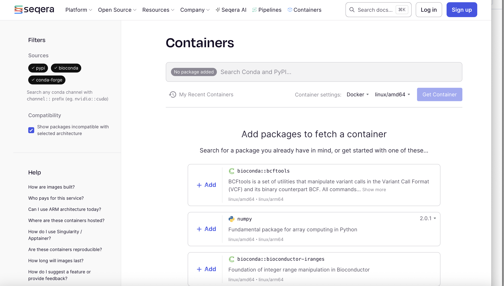

Containers
Reproducibility in Bioinformatics
In an ideal world I would be able to write a piece of software, or a develop some code to analyse data on my computer, and then send someone else this software or code and they could run it as well, getting the same results.
In reality, I would very likely run into at least one of the following problems:
- It is not uncommon for people within the same team to use different operating systems (whether MacOS, Windows, or different flavours of Unix builds). Even if everyone is using a MacOS, there are still different versions that impact the way people are able to work with their machines.
- Almost every piece of software has some sort of dependency - other software - it needs to run. Some programs might “just” need a bash shell or basic python, while others need a variety of compilers and additional libraries to function. Often, these dependencies require further dependencies to be installed. It is also not uncommon for dependencies for Program 1 to clash with the dependencies for Program 2, requiring the user to uninstall dependencies to be able to install others.
- In bioinformatics, tools are very often not maintained after the student that wrote the software graduated, the PI moved to a different university, or the funding simply ran out. This leads to a lot of really good software not really being supported by newer operating systems, usually due to dependencies not being easily available or, as before, clashing with newer versions. This makes installing a tool one of the biggest hurdles to overcome in bioinformatics.
- You often cannot install different versions of the same program on one computer due to conflicting names. This is particularly problematic when you want to rerun an analysis for a publication where you need to use the same software all the way through.
Any of these points might lead to you not being able to run my code, or it running but giving different results. They make bioinformatics less reproducible as tools and code cannot be moved easily betweem systems (for example if you upgrade your computer or want to share your pipeline with a colleague). Fortunately, most of these problems can be overcome with containers.
Containers
What are containers?
Containers are stand-alone pieces of software that require a container management tool to run. They are build and exchanged as container images that specify the contents of the container, such as the operating system, all dependencies, and software in an isolated environment. The container management tool then takes the images and build the container. These management tools can be run on all operating systems, and since the container has the operating system within it, it will run the same in all environments. Container images are easily portable and immutable, so they are stable over time.
Running Containers
There are several programs that can be used to build and run containers. Docker, Appptainer, and Podman are the most commonly used platforms to date. They all have their pros and cons. If you are using a Windows machine that only you are using, then Docker is likely the least complex tool to install. On multi-user systems like a server, Apptainer is the best tool for the job. For this tutorial and the rest of the course, we will use Apptainer commands. There are small syntax changes between bash and powershell commands, but they are very similar.
Downloading Container Images
There are several repositories for people to publish container images that they have specified. Dockerhub and Seqera are two commonly used platforms for downloading container images. You are able to use container images from dockerhub on Apptainer without any problems.
dockerhub Tutorial
On the dockerhub landing page, you have a search bar, and some login options. You do not need to create an account to access the containers on dockerhub.

For these tutorials, we’ll search VCFtools, a commonly used software for VCF manipulation and querying. The results of the search give us several different containers with the same name.

You can see who made the container image, how many times it has been downloaded (or pulled), when it was updated (here updated means different versions of the image being uploaded), and how many people have starred it. It is usually a good rule of thumb to use the most popular images from users that have uploaded a lot of container images. The biocontainers and pegi3s profiles have builds for a lot of tools, and they are built really well!
If we click on the vcftools from biocontainers we get to a typical dockerhub image landing page:

There is information on the frequency of the container image being pulled, as well as a pull command to download the image. This command is for docker, so we need to modify it for Apptainer.
apptainer pull vcftools_0.1.16-1.sif docker://biocontainers/vcftools:v0.1.16-1-deb_cv1This command has several parts to it:
apptainercalls on the Apptainer software to runpulltells Apptainer which function to use. In this case, we want it to go fetch something from a repositoryvcftools_0.1.16-1.sifis the name of the container image on our local machine. We could call itI_Love_Dogsbut that is not very informative at all. Your collaborator won’t know what it means, and you certainly won’t know what it means in 6 months from now! It is also good practice to put the version number in your image name in case you want to have several versions at the same time, and you need to tell them apart.docker://is the registry you are pulling from. There are several different registries, but we are only going to show 2 during this course. (You will see another one in the Seqera tutorial)biocontainers/vcftoolsis the profile/repository and container you are pulling
File format extensions like .txt and .sif are really only important for us. However, it is good practice to append your files with appropriate extensions to ensure that you follow good data management practices
If you are interested in a different version than the current version, there are other versions under the tags tab:

If you wanted to download another version of the container, you simply copy the command shown on the right side, and alter the syntax, for example
apptainer pull vcftools0.1.14.sif docker://biocontainers/vcftools:v0.1.14_cv2Seqera Tutorial
The Seqera landing page is a bit different from the dockerhub landing page, and it works a bit differently from dockerhub. Dockerhub hosts container images that users have uploaded, while Seqera makes container images as you request them. They use bioconda, conda-forge, and pypi libraries to build their containers images with Wave. The advantage is that you can include several different softwares in your container image at once. The disadvantage is that you are limited to software hosted on the aforementioned repositories. Usually this isn’t a problem, but sometimes you want to use something that isn’t hosted there.

When you pull an image from Seqera and want to run it with Apptainer, you need to remember to change the container setting from Docker to Singularity, the older name of Apptainer.

Since Seqera builds containers on-demand, sometimes you have to wait for the container to finish compiling. You can see that it is still preparing the container image from the fetching container comment. Don’t try to pull it when it is still building!

When the container image is ready, you can copy the text and pull the image to your system:

apptainer pull vcftools_0.1.17.sif oras://community.wave.seqera.io/library/vcftools:0.1.17--b541aa8d9f9213f9Here we use oras:// instead of docker:// as we are pulling from the oras registry. We are also pulling a different version from Seqera, so the name of the container is different.
Running Containers
Once you have the container image on your local machine, you want to be able to use it. Apptainer can be used to build the container from the image. Then you can either enter the container and run as if you had the exact same operating system as the person who built it, or you can run the software inside the container from outside of the container.
There are 2 different ways to use a container: run and exec. The apptainer run command launches the container and first runs the %runscript for the container if one is defined, and then runs your command (we will cover %runscript in the Building Containers section). The apptainer exec command will not run the %runscript even if one is defined. It is a small, fiddly detail that might be applicable if you use other people’s containers. After calling Apptainer and the run or exec commands, you can use your software as you usually would
apptainer exec vcftools_0.1.17.sif vcftools --versionThis command runs your vcftools_0.1.17.sif container from the image, calls on the program vcftools that is within the container, and shows you the version. If you had installed VCFtools locally, you would have just used
vcftools --versionPlease remember that VCFtools is just an example. If you want to run any other tool everything after apptainer run or apptainer exec has to be substituted by the name of the specific container image and the run commands for that particular tool!
Building Containers
If the software you would like to use is not packaged into a container by anyone else, you might want to build it yourself. For this, we are just going to show a very simple example. Building containers from scratch is a computationally intensive task. You build containers from a definition file with the extension .def
Here we are going to build a container with a cow telling us the date. Save this in a file called lolcow.def.
Bootstrap: docker
From: ubuntu:20.04
%post
apt-get -y update
apt-get -y install cowsay lolcat fortune
%environment
export LC_ALL=C
export PATH=/usr/games:$PATH
%runscript
date | cowsay | lolcat There are several components to this definition file.
- You can set the operating system you want in the container, in this case Ubuntu 20.04.
%postsection is where you update the OS from its base state, install dependencies and so on.%environmentis where you export paths and modify the environment.%runscriptis the script that will run when you useapptainer run container.sif. If you don’t include a runscript, then nothing will happen when you try to run it without any commands. You could build this container without anything in the%runscriptsection, and useapptainer run container.sif date | cowsay | lolcatto get the same output.
apptainer build lolcow.sif lolcow.defYou’ll get a lot of output on the status of the build, ending in
INFO: Adding environment to container
INFO: Adding runscript
INFO: Creating SIF file...
INFO: Build complete: lolcow.sifWe can now run our new container with
apptainer run lolcow.sif
Try removing the %runscript, build it again, and see what happens.
Bootstrap: docker
From: ubuntu:20.04
%post
apt-get -y update
apt-get -y install cowsay lolcat fortune
%environment
export LC_ALL=C
export PATH=/usr/games:$PATH
%runscript
fortune | cowsay | lolcat If we use the same definition file as before, but substitute date for fortune in the runscript and build the container, we now get a philosophical cow with a dark sense of humour:


To show the difference between the run and exec commands, we can use the same container with fortune in the runscript and run:
apptainer run lolcow.sif bash -c "date|cowsay"and
apptainer exec lolcow.sif bash -c "date|cowsay"The run command gives us a philosophical cow while exec gives us our boring cow again.